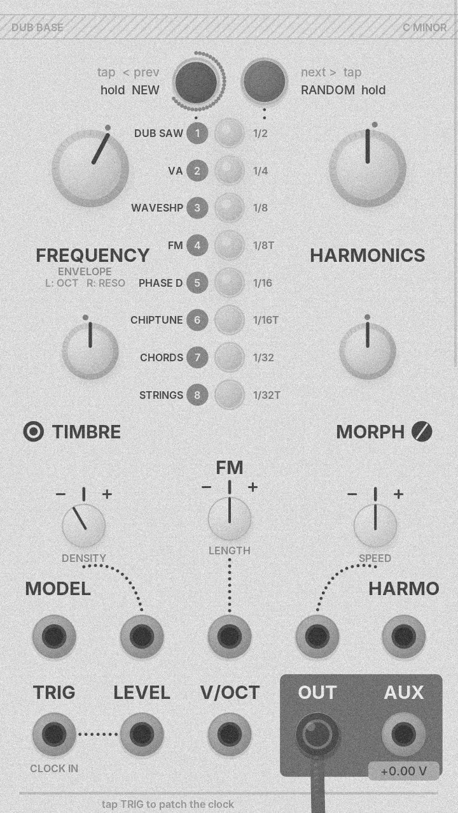
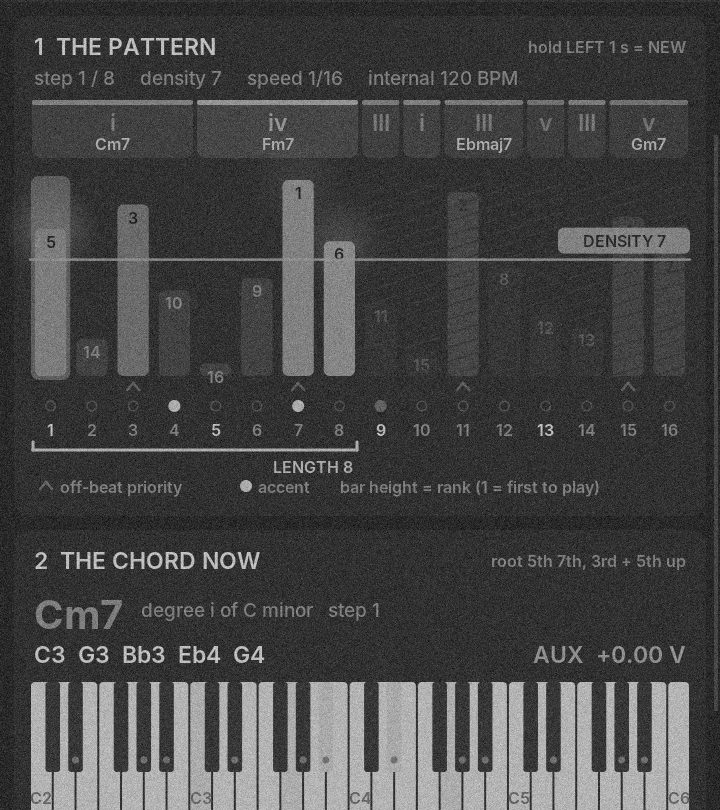
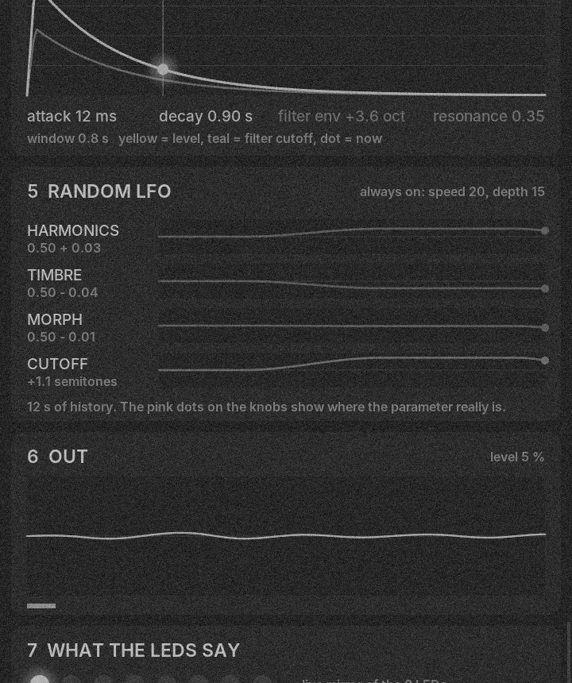

Flash from this page
This page plays the firmware into your Plaits. Nothing is installed on your computer; the update travels as audio.
- Power off the case. Unplug all cables from Plaits.
- Patch your headphone output into Plaits MODEL (3.5 mm stereo → mono cable).
- Set Plaits FREQUENCY to 12 o’clock — in update mode it is the input level.
- Hold the LEFT button and power on. Let go when the LEDs show update mode.
- Computer volume around 80 %, no Bluetooth, notifications off (Do Not Disturb). Keep this tab open in front.
- Press Play. Watch LEDs 1–4: the two green ones lit is right, yellow may flicker, red should stay off. Too few: raise the volume. Red: lower it. Adjust in the first seconds, then don’t touch anything.
- After 2 min 36 s the module restarts into DUB BASE. All LEDs blinking red: press LEFT, nudge FREQUENCY and play again.
Ready. The file (14.8 MB) loads when you press Play.
What it is
Dub chords
Every chord is a C minor DUB voicing: root, 5th, 7th, then the 3rd and 5th an octave up. No note ever leaves the scale.
TRIG is the clock
16th-note pulses into TRIG drive a 16-step generative sequencer. Unpatched, it runs at an internal 120 BPM.
One-knob envelope
FREQUENCY sets attack, decay and filter envelope together: short dark pluck, dub stab at noon, long swell on the right.
Root CV out
AUX sends the root of every chord as 1 V/oct, so a second synth can follow the progression.
Beta testing
New versions in testing. Locked for testers.
The panel
| FREQUENCY | Envelope — attack, decay and filter envelope on one knob. |
|---|---|
| LEFT held + FREQUENCY | Octave 1–5 (noon = 3). |
| RIGHT held + FREQUENCY | Resonance, limited: it never self-oscillates. |
| HARMONICS / TIMBRE / MORPH | Sound of the chord model (table below). |
| TIMBRE attenuverter | Density: how many of the 16 steps play. |
| FM attenuverter | Length of the pattern, 1–16 steps. |
| MORPH attenuverter | Speed: 1/2 · 1/4 · 1/8 · 1/8T · 1/16 (centre) · 1/16T · 1/32 · 1/32T. |
| Tap LEFT / RIGHT | Previous / next chord model. |
| Hold LEFT 1 s | NEW pattern — LEDs pulse green, then sweep. |
| Hold RIGHT 1 s | RANDOM sound — new HARMONICS / TIMBRE / MORPH. The knobs pick up again when you turn them. |
| Both buttons 2 s | CV TUNE for the AUX pitch CV. 4 s: the original CV input calibration. |
A slow random LFO is always on (speed 20, depth 15). It drifts HARMONICS, TIMBRE, MORPH and the filter.

Jacks
Chord models
| # | Model | HARMONICS | TIMBRE | MORPH |
|---|---|---|---|---|
| 1 | DUB SAW (saw > pulse) | detune | saw → pulse | noise “chuff” on each stab |
| 2 | VA | 2nd oscillator interval | pulse width | pulse ↔ saw |
| 3 | WAVESHAPE | asymmetry | fold | triangle → saw |
| 4 | FM | ratio | index | feedback |
| 5 | PHASE DIST | resonance | distortion | PD ↔ resonant |
| 6 | CHIPTUNE | duty cycle | bit crush | square ↔ triangle |
| 7 | Plaits CHORDS engine | brightness | inversion | waveform |
| 8 | Plaits STRING MACHINE | brightness | filter / ensemble | registration |
How a pattern is made
- Chords. 1, 2 or 4 per pattern (35 / 40 / 25 %). The first is the tonic 70 % of the time; the next are weighted towards iv, v, VI and III, never the same twice in a row.
- Sections. Each step takes the chord of its part of the bar; 6 % of steps get a passing chord.
- Ranks. Every step gets a rank: off-beat bonus plus chance. The third 16th of each beat plays first — the classic dub off-beat stab.
- Density. Steps with a rank below DENSITY play. Turn it up and steps join in rank order, so the groove grows without changing.
- Accents. 35 % on the strong off-beats, 15 % elsewhere. An accent opens the filter further.
- Length and speed. LENGTH loops the first N steps; SPEED turns each TRIG pulse into 1/2 … 1/32T steps.
Chord model, octave, resonance and the pattern are saved 2 s after a change.

Install
Plaits updates over audio. You play a WAV file into the module — from this page (see Flash), a Mac, a PC or a phone.
You need
- DubBase-Plaits-v1.4.wav (14.8 MB, 2 min 36 s). Don’t convert it to MP3.
- A cable from your headphone output to a Eurorack jack (3.5 mm TRS → TS, or an adapter plus a patch cable).
Prepare the computer
- Output to the headphone jack; no Bluetooth device connected.
- Do Not Disturb on, chat and mail closed — an alert sound breaks the transfer.
- Volume around 80 %, no EQ or sound enhancers.
On the module
- Power off. Unplug all cables from Plaits.
- Patch the audio cable into MODEL.
- Set FREQUENCY to 12 o’clock — in update mode it sets the input level.
- Hold the LEFT button and power on.
- Play the WAV. LEDs 1–4 are a level meter: the two green ones lit is right, yellow may flicker, red should stay off.
- Let it play to the end. The module restarts by itself and plays DUB BASE.
All LEDs blinking red: press LEFT, nudge FREQUENCY (usually a little lower) and play the file again. To go back, install the official Plaits WAV the same way — your calibration is kept.
Root CV & CV TUNE
AUX sends the root note of every chord that plays — 1 V/oct, C3 = 0 V, about −2 V to +3 V — and holds it until the next chord. Patch it to another synth’s V/OCT and clock that synth’s envelope from the same clock you send to TRIG.
Output levels differ a little between modules, so tune the CV once. If a held note slowly sinks back to 0 V, that module’s output stage is AC-coupled and the CV can’t work on it.
- Patch AUX to your synth’s V/OCT. Hold both buttons 2 s.
- AUX alternates every 2 s: C3 (0 V), LEDs 1–4 green, and C5 (+2 V), LEDs 5–8 green. OUT plays the same notes as a sine.
- Tune your synth so the low note is a C, then turn FREQUENCY until the high note is exactly two octaves above it. The red LED shows the trim.
- Tap a button to save and go back to playing.
LEDs
The chord model is a yellow LED; the others glow dim green. It blinks off on every step that plays. Move a control and the LEDs show its value for a second: envelope = yellow bar, resonance = red bar, density = green bar, length = yellow bar, octave = one yellow LED, speed = one LED (red for triplets).
Dub Plaits for Android
The app runs the same firmware code as the WAV — ui.cc, voice.cc, dub.cc and the Plaits engines — compiled for the phone, polled 4000 times a second like the module. Only the knobs, buttons, LEDs and flash memory are replaced by the screen.
- A Plaits panel with touch knobs, the two buttons (multi-touch for the hold gestures) and the eight LEDs.
- Tape echo in the spirit of the old dub echo machines: tempo-synced (1/16 to 1/2, dotted 1/8 by default), repeats that get darker and dirtier, wow and flutter on the tape speed. Plus a dark reverb. App only — the module stays dry.
- A TRIG clock (30–240 BPM) or the internal 120 BPM, and the live AUX voltage.
- Underneath: the pattern, the chord that is playing, the envelope, the random LFO and the output, all live.
Android 8 or newer. Allow installs from unknown sources, then open the .apk.

Downloads
sha256 7f8d3930ca62526126e4e3cf895bd0689540743b352a7553d1e68d12b6b05952
MANUAL.mdFull manual
DubPlaits-v1.4.1-Cminor.apkAndroid app · tape echo + reverbsha256 bec5b5826cc20a0eed305097b380214325f2916f4caf9a9cfd45636ceb6e839e
DubBase-Plaits-v1.4.binRaw image · C minor (SWD / ST-Link)sha256 7c6d4bccb180abe93ca57b33cb669d618cd551e66615837af65d455655c8f015
Changes
- app 1.4.1
- Tape echo and reverb in the Android app.
- v1.4
- Cleaner, less hot output: a leveler with 6 dB of headroom keeps stacked chords and resonance out of the clipper. Distortion was up to 28 %, now under 0.5 %.
- v1.3
- AUX becomes a 1 V/oct pitch CV of the chord root, with CV TUNE.
- v1.2
- The CHORDS filter follows the inversion; the LFO starts right at power-on.
- v1.1
- First version: fixed C minor, DUB chords, one-knob envelope, the sequencer on the attenuverters.
Source
Everything is in this repository: the firmware changes against pichenettes/eurorack as a patch and as files, the clang build script, the emulator tests, and the Android app. See the README for build steps.
By Narti Live
DUB BASE is made by Narti Live. Follow for patches, jams and new versions.